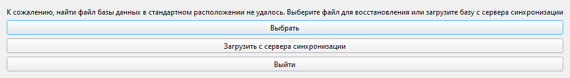
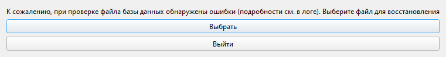

Приложение 2. Запуск, первый старт, где хранятся данные |
Как запустить программу |
Программа не требует установки: это папка с файлом FinanceCalender.exe. Папку можно держать где угодно, в том числе на флешке, но она должна быть доступна для записи, иначе появится сообщение «Не удалось создать папку с данными программы».
|
🍎 macOS: Программа — пакет |
Если включена синхронизация, программа сразу сверит данные с общей базой (раздел 15), а затем проверит обновления (раздел 16).
Первый запуск |
Пустую базу программа сама не создаёт, поэтому при первом запуске на новом компьютере открывается окно «Восстановление базы данных». Нужно выбрать файл базы или подключиться к синхронизации и загрузить общую базу.

Рис. 61. Окно «Восстановление базы данных» при первом запуске.
| Кнопка | Что делает |
|---|---|
| «Выбрать» | Файл базы .db: например, резервная копия или файл от коллеги |
| «Загрузить с сервера синхронизации» | Настройки синхронизации; после сохранения подключения программа загрузит общую базу (раздел 15) |
| «Выйти» | Завершает программу |
|
💡 Совет. Пока базы нет, работать нельзя: попросите файл у ответственного за программу или подключитесь к общей базе. |
Первое подключение к синхронизации |
Данные для окна «Настройки синхронизации…» (меню кнопки синхронизации, раздел 15) выдаёт ответственный за программу; после ввода данных включите синхронизацию и проверьте подключение.
Какой у вас случай, зависит от того, есть ли общая база в хранилище. Вопрос зададут, только когда вы сами запустите синхронизацию (кнопка или «Синхронизировать сейчас»); автоматическая проверка лишь покажет состояние на кнопке.
| Случай | Что сделать | Что будет |
|---|---|---|
| Первое устройство: общей базы ещё нет | На вопрос «В папке обмена нет общей базы. Создать её из вашей локальной копии?» ответить «Да» | В хранилище появится общая база, равная вашей локальной копии |
| Новое устройство без базы | В окне «Восстановление базы данных» нажать «Загрузить с сервера синхронизации» | Общая база загрузится как ваша локальная копия |
| Второе устройство, на котором уже есть своя база | На вопрос «В папке обмена лежит общая база с другими данными. Заменить ею вашу локальную копию? Текущая локальная копия будет сохранена в папке резервных копий.» ответить «Да» | Локальная копия заменяется общей базой; прежняя сохраняется в data\backup как before_sync_… (раздел 14) |
|
⚠️ Внимание. Отвечайте «Да» на второй вопрос, только если уверены, что в хранилище лежат нужные данные. Если нужные данные у вас, а общая база пустая или чужая, нажмите «Нет» и обратитесь к ответственному за программу. |
Где хранятся данные |
Все данные (база, резервные копии, настройки, журнал работы) хранятся в папке data рядом с программой; напрямую с этими файлами работать не нужно.
data.log.log из папки data\logs.|
🍎 macOS: Данные лежат в папке |
Резервные копии при запуске |
При каждом запуске программа сохраняет резервную копию базы и удаляет слишком старые (раздел 14).
Если базу не удалось открыть |
При запуске программа проверяет базу. Возможные сообщения:
| Что вы видите | Что случилось | Что делать |
|---|---|---|
| Окно «Восстановление базы данных»: «К сожалению, найти файл базы данных в стандартном расположении не удалось…» | Базы нет: первый запуск или файл удалили | См. «Первый запуск» выше |
| Окно «Восстановление базы данных»: «К сожалению, при проверке файла базы данных обнаружены ошибки (подробности см. в логе). Выберите файл для восстановления» | База повреждена | «Выбрать» → самая свежая резервная копия (дата и время в названии). Изменения после создания копии пропадут. Повреждённый файл сохранится как db_corrupt_… в data\backup (раздел 14) |
| «Файл базы данных занят другим процессом (возможно, программа уже запущена)…» | Программа уже запущена или файл открыт другой программой. Программа закроется, файл не изменён | Закройте другие окна программы и запустите её снова |
| «База данных создана более новой версией программы. Обновите программу» | Базу открывали более новой версией программы, чем у вас. Программа закроется | Обновите программу (раздел 16) или возьмите новую версию у коллеги |
| «Не удалось обновить структуру базы данных до версии этой программы. Файл базы данных не изменён, программа будет закрыта. Передайте разработчику файлы из папки логов (подробности см. в логе)» | После обновления программы базу не удалось подготовить к работе. Данные остались как были, программа закроется | Сообщите ответственному за программу, и приложите журнал работы (в окне есть кнопка «Открыть папку логов») |
| «Не удалось открыть базу данных (подробности см. в логе)» | База есть, но открыть её не получилось. Программа закроется | Запустите программу ещё раз. Если не помогает, сообщите ответственному за программу, и приложите журнал работы; данные можно вернуть из резервной копии |
| «Включите синхронизацию в настройках, чтобы загрузить базу с сервера» после «Загрузить с сервера синхронизации» | В окне «Настройки синхронизации» не включён пункт «Включить синхронизацию» | Нажмите кнопку ещё раз, включите синхронизацию и укажите данные подключения |
| «Не удалось загрузить базу данных с сервера: …» | После двоеточия указана причина | Причины и действия — в таблице «Что может пойти не так» раздела 15 |

Рис. 62. Окно «Восстановление базы данных», когда база повреждена. Кнопки «Загрузить с сервера синхронизации» здесь нет: можно только выбрать файл.
Особенности macOS |
Программа поставляется архивом FinanceCalender-….zip. На Mac:
Платежный календарь (файл Платежный календарь.app).Обновление заменяет пакет новой версией, поэтому программа должна лежать в папке с правом записи. Из архива или «Загрузок» обновление не сработает: программа попросит перенести её в папку «Программы».
Программа не имеет подписи разработчика, заверенной Apple, поэтому macOS может остановить её при первом запуске. Ниже самые частые случаи.
1. Предупреждение о программе, скачанной из интернета («Не удалось проверить, что в «Платежный календарь» нет вредоносного ПО» или «…нельзя открыть, так как не удалось проверить разработчика»). Это стандартная проверка macOS, с программой всё в порядке. Чтобы разрешить запуск:
Платежный календарь в папке «Программы» правой кнопкой мыши (или с нажатой Ctrl), выберите «Открыть» и в окне с предупреждением снова нажмите «Открыть». Если такого пункта нет, действуйте как в предыдущем пункте через «Системные настройки».2. Сообщение, что программа «повреждена» и её нужно переместить в Корзину. Так macOS иногда реагирует на программы без подписи. Не удаляйте программу: скачайте архив заново и распакуйте его в Finder (не сторонним архиватором). Если сообщение не пропало, обратитесь к ответственному за программу.
3. Запрос на доступ к файлам и папкам. При первом обращении к папке «Документы», «Загрузки», «Рабочий стол» или внешнему диску macOS спросит разрешение на доступ к файлам: нажмите «Разрешить». Если отказали, включите его в «Системные настройки» → «Конфиденциальность и безопасность» → «Файлы и папки» (иногда нужен «Полный доступ к диску») и перезапустите программу.
4. Запрос на управление Microsoft Excel. Экспорт в PDF на Mac выполняется через Excel (раздел 11); при первом экспорте macOS спросит разрешение управлять «Microsoft Excel» — нажмите «Разрешить». Если отказали: «Системные настройки» → «Конфиденциальность и безопасность» → «Автоматизация» → «Платежный календарь» → «Microsoft Excel». Без Excel экспорт в PDF недоступен.
|
⚠️ Внимание. Не отключайте проверку программ целиком ради этой программы: разрешите именно «Платежный календарь». |
Данные хранятся в папке пользователя ~/Library/Application Support/FinanceCalender, а не в пакете, поэтому перенос, обновление и удаление пакета их не затрагивают. Запускать программу с данными с флешки на Mac нельзя.
Папка Library скрыта: в Finder выберите «Переход» → «Переход к папке…» (Cmd+Shift+G) и вставьте путь. Чтобы перенести данные на другой Mac, закройте программу и скопируйте папку FinanceCalender в то же место; если там уже есть такая папка, перед заменой сохраните прежнюю.